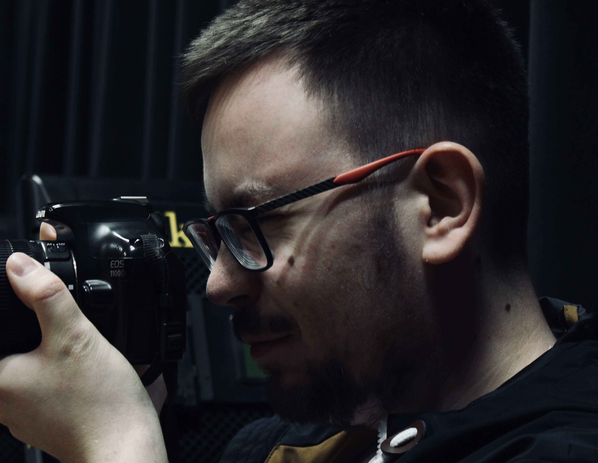

My Curriculum Vitae
Summary

Bachelor of Engineering in Multimedia and Graphic Technology, graduated from the University North. During my studies, I gained practical experience through various jobs, including positions in warehousing, retail (clothing), and drugstores. These experiences helped me develop adaptability, a strong work ethic, and a proactive approach to learning new skills. I am team-oriented, communicative, and committed to delivering excellent customer service. After two years as a student working in a drugstore, I advanced to a full-time Sales Advisor position.
Education
Bachelor of Engineering in Multimedia and Graphic Technology
University North - Varaždin, Croatia
2021 - 2024
EQF Level: 6
Work Experience
Sales Advisor
Mueller Trade Zagreb d.o.o. - Varaždin, Croatia
Jul 2024 - present
Responsibilities:
- Assisting and advising customers
- Unloading and receiving goods
- Stocking shelves and maintaining product organization
- Stock control and corrections
- Monitoring expiration dates
- Participating in inventory
- Operating the cash register
- Maintaining store cleanliness
Skills
Languages
- Croatian: Native
- English:
- Listening: C1
- Reading: C1
- Speaking: B2
- Interaction: B2
- Writing: B2
Digital Skills
- Proficient in Microsoft Office (Word, Excel, PowerPoint)
- Experienced with communication tools (Skype, Zoom, Microsoft Teams, TeamViewer)
- Advanced knowledge of Adobe Creative Suite (Photoshop, Illustrator, InDesign)
- Graphic prepress experience
- Basic knowledge of HTML and CSS
- Video editing and post-production in DaVinci Resolve